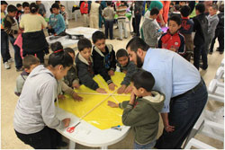
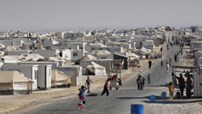
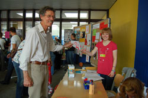
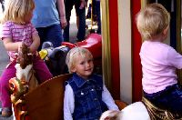
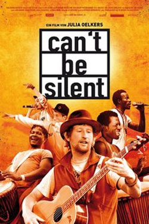

|
Mittwoch, 25. September 2013 |
Mehr humanitäre Hilfe für die Opfer des Kriegs in Syrien und Aufnahme von Flüchtlingen in der Europäischen Union
Terre des Hommes-Appell an die Europäische Kommission und die EU-Mitgliedsstaaten |
Die Internationale Föderation Terre des Hommes, ein Zusammenschluss von zehn Kinderrechtsorganisationen in Europa und Kanada, appelliert dringend an die Europäische Kommission und die EU-Mitgliedsstaaten, die humanitäre Hilfe für die Opfer des Krieges in Syrien und den Nachbarländern zu erhöhen und mehr Flüchtlingen Schutz in Europa zu gewähren. In einem Offenen Brief an die EU-Außenbeauftragte Catherine Ashton sowie die EU-Kommissarinnen Cecilia Malmström und Kristalina Georgieva drängt Terre des Hommes auf schnellen Schutz für die mittlerweile rund sieben Millionen Menschen, die dringend auf humanitäre Hilfe angewiesen sind. Nach Angaben der UN sind 4,2 Millionen Menschen innerhalb Syriens auf der Flucht, über zwei Millionen Flüchtlinge leben bereits in den Nachbarstaaten Irak, Jordanien, Libanon, der Türkei und Ägypten. In Syrien sind viele Menschen von jeglicher Versorgung abgeschnitten.
Die Hälfte dieser Vertriebenen und Flüchtlinge sind Kinder und Jugendliche, sagte Danuta Sacher, Vorstandsvorsitzende von terre des hommes Deutschland. Diese Kinder haben ihr Zuhause verloren. Viele mussten mit ansehen, wie Verwandte und Freunde getötet wurden, sind verletzt und traumatisiert. Wir appellieren an die Europäische Union und alle Mitgliedsstaaten, die Hilfe auszuweiten und mehr Menschen Schutz in der EU zu gewähren.
terre des hommes erkennt an, dass die Europäische Union derzeit der größte Geldgeber für die Opfer des syrischen Krieges ist. Dennoch reichen die Mittel bei weitem nicht aus: Die Vereinten Nationen beziffern den Bedarf auf rund 4,4 Milliarden Dollar, die bisherigen internationalen Hilfszusagen decken aber erst etwa 60 Prozent dieser Summe. Angesichts der internationalen Lage ist mit einer weiteren Verschärfung der Situation für die Zivilbevölkerung und weiter steigenden Flüchtlingszahlen zu rechnen. Besonders schwierig für die Hilfsorganisationen ist der Zugang zu Vertriebenen und Kriegsopfern in Syrien selbst. terre des hommes bittet die EU, sich gegenüber allen Kriegsparteien weiter und entschieden dafür einzusetzen, dass die Zivilbevölkerung geschützt und Zugang zu humanitärer Hilfe gewährt wird, so Danuta Sacher.
terre des hommes ruft die EU dazu auf, die Grenzen zu öffnen und syrischen Kriegsopfern Schutz in Europa und faire Asylverfahren zu gewähren. Dabei muss besonders das Wohl der Kinder bedacht und dafür gesorgt werden, dass die Familien zusammengeführt werden. Bisher fanden 42.000 Flüchtlinge aus Syrien Zuflucht in der EU, davon 5.000 in Deutschland.
terre des hommes versorgt gemeinsam mit seinen Schwesterorganisationen aus der Schweiz, Italien und den Niederlanden Kinder in Syrien und in Flüchtlingslagern im Libanon und Jordanien mit Nahrung, Wasser und medizinischer Hilfe. Verletzte und traumatisierte Kinder werden medizinisch und psychologisch betreut.
Die Unterstützung syrischer Flüchtlinge steht auch im Zentrum der terre des hommes-Projekte in Jordanien, wo nach Angaben der UN-Flüchtlingsorganisation (UNHCR) etwa 520000 offiziell registriert sind; mehr als die Hälfte davon sind Kinder. terre des hommes ist auch im Norden des Landes, an der Grenze zu Syrien, aktiv. Hier wurden Schutzprojekte eingerichtet, die sich um die psychosoziale Betreuung und materielle Unterstützung der syrische Flüchtlingskinder und ihrer Familien kümmern. Terre des hommes ist im Flüchtlingslager Emirates Jordan Camp (EJC) in der Nähe der Stadt Zarqa präsent. Hier werden mehr als 800 Kinder betreut und versorgt.
Bis zum Ende diesen Jahres soll ein weiteres Projekt für Flüchtlinge in Jordanien aufgebaut werden. In Kooperation mit terre des hommes Schweiz soll die materielle Versogung von Flüchtingsfamilien sicher gestellt werden. Ein weiterer Schwerpunkt liegt auf der Betreuung von 2.000 Kindern. Zahlreiche Kinder und Familienangehörige sind durch den Krieg traumatisiert Viele mussten miterleben, wie ihre Häuser zerstörten und Angehörige getötetet wurden.
Syrien-Appell: Offener Brief der Internationalen Föderation Terre des Hommes an die Europäische Kommission und die EU-Mitgliedsstaaten (pdf)
Weitere Informationen:
Ihre Spende - Stichwort: "Syrien"
Spendenkonto 700800700
Volksbank Osnabrück eG
BLZ 26590025
Spendenkonto 120 790
Sparkasse Baden-Baden / Gaggenau
BLZ 662 500 30
Spendenkonto 102 748 00
VoBa Baden-Baden / Rastatt
BLZ 662 900 00
Zur Online-Spende |
Mittwoch, 25. September 2013 |
Neue Bundesregierung muss Anstrengungen für die Verwirklichung der Millenniumsziele verdoppeln!
Sonderveranstaltung der UN-Generalversammlung zu den MDGs |
Die UN-Generalversammlung zieht heute auf einer Sonderveranstaltung in New York eine letzte Zwischenbilanz über die Millenniumsentwicklungsziele (MDGs), die bis zum Jahr 2015 verwirklicht werden sollen. Außerdem entscheidet sie über den Fahrplan zu einer neuen globalen Entwicklungsagenda für die Zeit nach 2015.
Dazu erklärt in New York Danuta Sacher, Vorstandsvorsitzende von terre des hommes: »UN-Generalsekretär Ban Ki-moon hat einen Weckruf an die Staatengemeinschaft gerichtet, ihre Anstrengungen bei der Armutsbekämpfung zu erhöhen. Trotz mancher Fortschritte bei der Verwirklichung der MDGs leben noch immer 1,2 Milliarden Menschen in extremer Armut. Besonders schmerzt, dass wichtige Ziele, die die Rechte von Kindern und Jugendlichen betreffen, nicht erfüllt sind. Noch immer haben 57 Millionen Jungen und Mädchen keinen Zugang zu Schulbildung; das Ziel, die Rate der Kindersterblichkeit bis 2015 um 75 Prozent zu senken, ist bei weitem nicht erreicht.
Mitverantwortlich dafür sind auch die Industrieländer, die ihre Zusagen zur Erfüllung der MDGs nicht eingehalten haben. Dazu gehören der Abbau schädlicher Agrarsubventionen, die Regulierung der globalen Finanzmärkte und die Erhöhung der Entwicklungsfinanzierung. Das gilt auch für Deutschland.
terre des hommes erwartet von der neuen Bundesregierung, dass sie in den kommenden zwei Jahren deutlich mehr tut, um ihre internationalen Verpflichtungen zu erfüllen.
Angesichts der drängenden globalen Zukunftsprobleme, vom Klimawandel bis zur Ernährungskrise, ist es zu begrüßen, dass die UNO nun einen Fahrplan zu einer universellen Nachhaltigkeitsagenda vereinbart hat. Sie soll ökologische, soziale und wirtschaftliche Ziele umfassen und für alle Länder der Welt gültig sein.
Die neue Bunderegierung ist gefordert, ihre Gestaltungsmöglichkeiten zu nutzen und in den beginnenden Verhandlungen auf UN-Ebene Positionen zu beziehen, die den Erfordernissen des notwendigen globalen Wandels hin zu einer ressourcenschonenden und sozial gerechten Wirtschafts- und Lebensweise gerecht werden.«
terre des hommes setzt sich über die Netzwerke Venro und Action for Global Health dafür ein, Kinderrechte stärker in die Post-2015-Agenda zu verankern.
Weitere Informationen:
|
Montag, 23. September 2013 |
Syrien: Hilfe unter gefährlichen Bedingungen
Die Arbeit von Bündnis Entwicklung Hilft in Syrien und den Nachbarländern |
 Syrien, zweieinhalb Jahre nach Beginn der Gewalt. Die Angst unter der Zivilbevölkerung wächst, die Gewalt eskaliert immer weiter, die Menschen sind mehr denn je auf Hilfe angewiesen. Es geht um Notunterkünfte, um dringend benötigte Medikamente, um die Fortführung von Schulunterricht, um die Versorgung mit Nahrungsmitteln – und jetzt, da der nächste Winter vor der Tür steht, um die Bereitstellung von Decken und von Heizmaterial. Nach Angaben der UN sind allein innerhalb Syriens mittlerweile über vier Millionen Menschen auf der Flucht. Viele Krankenhäuser, Schulen, Wasserversorgungsleitungen und Wohnhäuser sind beschädigt oder komplett zerstört, die Infrastruktur zerfällt. Syrien, zweieinhalb Jahre nach Beginn der Gewalt. Die Angst unter der Zivilbevölkerung wächst, die Gewalt eskaliert immer weiter, die Menschen sind mehr denn je auf Hilfe angewiesen. Es geht um Notunterkünfte, um dringend benötigte Medikamente, um die Fortführung von Schulunterricht, um die Versorgung mit Nahrungsmitteln – und jetzt, da der nächste Winter vor der Tür steht, um die Bereitstellung von Decken und von Heizmaterial. Nach Angaben der UN sind allein innerhalb Syriens mittlerweile über vier Millionen Menschen auf der Flucht. Viele Krankenhäuser, Schulen, Wasserversorgungsleitungen und Wohnhäuser sind beschädigt oder komplett zerstört, die Infrastruktur zerfällt.
Die Bündnis-Mitglieder Christoffel-Blindenmission, medico international, Misereor, terre des hommes und Welthungerhilfe sind in Syrien, an der türkisch-syrischen Grenze und in den Nachbarländern Jordanien, Libanon und Irak über lokale Partnerorganisationen aktiv. Die unterschiedlichen Schwerpunkte der Mitgliedsorganisationen und der Partner-Ansatz ermöglichen es, auch unter den äußerst komplizierten und gefährlichen Bedingungen, Hilfsmaßnahmen durchzuführen.
Beispiele der Hilfe
In Syrien
Die Versorgung mit Medikamenten in Syrien wird immer schwieriger. Die Medikamentenproduktion ist vielerorts fast vollständig zum Erliegen gekommen, in den Krankenhäusern fehlt es am Allernötigsten. Bündnis-Mitglied medico international unterstützt deshalb gemeinsam mit dem Deutsch-Syrischen Verein zur Förderung der Freiheiten und Menschenrechte die medizinischen Teams in den von den Aufständischen kontrollierten Gebieten vor Damaskus, die im August von den Giftgasangriffen betroffen waren. Über Partnerkontakte werden spezifische Medikamente geliefert, die zur Behandlung von Giftgas-Opfern eingesetzt werden. In Qamishli im Nordosten Syriens unterstützt medico international außerdem mit der Medical Commission of Syrian Revolution ein medizinisches Netzwerk für Chronisch-Kranke, das sich aus den Bewohnern der Region und Binnenflüchtlingen gebildet hat. Im syrisch-libanesischen Grenzgebiet leistet der medico-Projektpartner Amel Association medizinische Unterstützung für Flüchtlinge und unterstützt die Vorbereitungen auf den Winter.
Die Bündnis-Mitglieder Misereor und Welthungerhilfe leisten über Partnerorganisationen in mehreren Städten Syriens Nothilfe. Mitarbeiter des Misereor-Projektpartner Jesuit Refugee Service (JRS) zum Beispiel verteilen in den Städten Homs, Damaskus und Aleppo an bedürftige Familien Lebensmittelpakete, Kochutensilien, Medikamente, Decken und Matratzen. Außerdem bieten sie warme Mahlzeiten an und organisieren Notunterkünfte. Im Rahmen eines laufenden Projektes der Welthungerhilfe erhalten Familien in Aleppo und Idlib Nahrungsmittelpakete und ergänzende Bargeldzuwendungen. Die Verteilung von Nahrungsmittelpaketen in Kombination mit Bargeld erfolgt auf Empfehlung der Vereinten Nationen, da dies den Empfängern eine gewisse Flexibilität in der Versorgung ermöglicht und gleichzeitig die lokalen Märkte stimuliert.
Von entscheidender Bedeutung ist, Kindern weiterhin Zugang zu Bildung zu verschaffen. Ein Großteil der staatlichen Schulen ist bereits seit Monaten geschlossen. Freizeitangebote sollen den Kindern und Jugendlichen inmitten der Not ein wenig Normalität ermöglichen. Der Misereor Partner JRS bietet deshalb zum Beispiel in seinen Zentren in Aleppo, Damaskus und Homs Ersatzunterricht an. Dafür organisieren die Mitarbeiter eigens Transportmöglichkeiten, damit sogar Kinder aus Kampf-Zonen in die Zentren kommen können. Die Welthungerhilfe hat über ihren Partner People In Need (PIN) in den vergangenen Monaten sechs provisorische Schulen in Aleppo eingerichtet. Wegen riesiger Nachfrage wird dieses Schulprojekt nun ausgeweitet. Und: medico international unterstützt gemeinsam mit der Initiative „Adopt a Revolution“, die seit zwei Jahren von Deutschland aus den Aufstand in Syrien gegen das Assad-Regime unterstützt, eine Kellerschule in Irbin, einem umkämpften Vorort von Damaskus.
In den Nachbarländern
Fast zwei Millionen Menschen haben in den Nachbarländern Libanon, Jordanien, Irak und Türkei Zuflucht gesucht – täglich kommen weitere hinzu. Die meisten syrischen Flüchtlinge in Jordanien und Libanon leben nicht in Flüchtlingslagern, sondern bei Gastfamilien, in Gemeinden, angemieteten Wohnungen und behelfsmäßigen Unterkünften. Das macht die Arbeit für Hilfsorganisationen unübersichtlicher, da es schwieriger ist, Flüchtlinge zu identifizieren, um ihnen zu helfen.
In Jordanien zum Beispiel hilft terre des hommes Deutschland gemeinsam mit „Terre des hommes in der Schweiz“ syrischen Bürgerkriegsflüchtlingen. Die Hilfsmaßnahmen kommen Kindern, ihren Familien, aber auch den Gastfamilien zugute. Neben materieller und finanzieller Unterstützung bieten die lokalen Partner von terre des hommes insbesondere psychosoziale Hilfe und Kinderschutzmaßnahmen an, da viele syrische Flüchtlingskinder durch Flucht- und Gewalterfahrungen traumatisiert sind. Besonders gefährdete Kinder erhalten spezielle psychologische Betreuung. Darüber hinaus werden auch Freizeitaktivitäten für die Kinder organisiert, die dazu dienen, sie psychisch zu entlasten und ihnen Lebensfreude zurückzugeben. Im Libanon helfen einheimische Partner von terre des hommes ebenfalls syrischen Flüchtlingen. Unter ihnen sind auch Palästinenser, die in Syrien lebten und vor den Kriegshandlungen in das Nachbarland Libanon geflüchtet sind.
Die parallele Unterstützung der Gastfamilien ist wichtig, da die stetig wachsende Menge an Flüchtlingen für die Gastländer zunehmend zur Belastung wird. Sie sprengt die Sozialstrukturen der Gemeinden. Im Libanon haben sich die Preise für lebensnotwendige Ressourcen wie Wasser oder Wohnraum vervielfacht, auch die ansässige Bevölkerung leidet inzwischen darunter, dass die Schulen überfüllt sind und die Gesundheitsversorgung überlastet ist. Hunderttausende Flüchtlinge entwickeln sich zunehmend zur Konkurrenz auf dem Arbeitsmarkt, weil sie ihre Arbeitskraft oft erheblich billiger anbieten als die einheimischen Jordanier oder Libanesen.
Die Christoffel-Blindenmission (CBM) hat im Zaatari-Flüchtlingscamp in Jordanien ein Projekt gestartet, das Flüchtlingsfamilien unterstützen möchte, die ein behindertes Familienmitglied haben. Denn Menschen mit Behinderungen sind in der Umgebung eines Flüchtlingslagers besonders verwundbar. Spezielle Trainings für Freiwillige aus dem Flüchtlingscamp sollen zum Beispiel das Bewusstsein für die Bedürfnisse von Menschen mit Behinderungen erhöhen. Außerdem plant der CBM-Partner Holy Land Institute for the Deaf (HLID) den Betrieb eines rehabilitativen Dienstes für Menschen mit Behinderungen sowie die Verteilung von medizinischen Hilfsmitteln.
Brot für die Welt, Christoffel-Blindenmission, Kindernothilfe, medico international, Misereor, terre des hommes und Welthungerhilfe leisten als Bündnis Entwicklung Hilft akute und langfristige Hilfe bei Katastrophen und in Krisengebieten.
Ihre Spende - Stichwort: "Syrien"
Spendenkonto 700800700
Volksbank Osnabrück eG
BLZ 26590025
Spendenkonto 120 790
Sparkasse Baden-Baden / Gaggenau
BLZ 662 500 30
Spendenkonto 102 748 00
VoBa Baden-Baden / Rastatt
BLZ 662 900 00
Zur Online-Spende |
Donnerstag. 19. September 2013 |
Kinderfest abgesagt |
Am 22. September war das 27. Kinderfest von terre des hommes Murgtal / Mittelbaden geplant. Leider kann es aus organisatorischen Gründen nicht stattfinden.
Das Organisationsteam hat sich zu diesem Schritt entschlossen, nachdem die renovierte Realschule für solche Festlichkeiten nicht mehr zur Verfügung steht. Die vom Gemeinderat kostenlos angebotene Wörtelhalle mit dem angrenzenden Freigelände hätte zwar als Ersatz dienen können, jedoch lässt die in den letzten Jahren dünner gewordene Personaldecke der Kinderhilfsorganisation eine ordnungsgemäße Durchführung des beliebten terre-des-hommes-Kinderfestes auf nicht erprobtem Gelände nicht zu.
terre des hommes Murgtal / Mittelbaden bittet um Verständnis. Die Mitarbeiterinnen und Mitarbeiter würden sich freuen, zahlreiche Besucher bei den anderen Veranstaltungen der begrüßen zu können.
Der Beginn des ersten Kinderfestes geht auf das Jahr 1986 zurück. Während im Hof der Realschule eine Kinderbelustigung und eine Bewirtung organsiert wurde, fand parallel dazu im Foyer das erste Konzert statt. Der IKK (Initiativkreis Kultur Kuppenheim) inszenierte „Auf dem persischen Markt“, ein Gemeinschaftskonzert mit jungen und älteren Musikern aus Oberndorf sowie einer stattlichen Anzahl Oberndorfer Kinder mit entsprechenden Tanzeinlagen. Der eigentliche Sinn des Konzerts war am Ende eine Sammelaktion: Eine kleine Bettlerschar wurde unter das Publikum geschickt und sammelte eifrig für Kinder in Chile. Erlös: 650 Euro eine stolze Summe für die damalige Zeit.
Nachdem die ersten Kinderfeste eine relativ bescheidene Resonanz aufweisen konnten, kamen zu den letzten 15 bis 20 Kinderfesten jeweils 1.500 bis 2.500 große und kleine Besucher aus dem gesamten mittelbadischen Raum, die von bis zu 100 Aktiven und Helfern betreut wurden bei etwa 30 Ständen und Programmpunkten. Jeweils fünf bis sieben tausend Euro Erlös konnten dabei erzielt werden, in den zurückliegenden Jahren mehr als 100.000 Euro für Unterstützung von Straßenkindern, Kinderarbeiter, für Projekte gegen sexuelle Ausbeutung, Mädchen- und Kinderhandel und Beschneidung sowie für Kinder auf der Flucht, für ökologische und kulturelle Projekte.
Es war den Initiatoren immer wichtig, ein anspruchsvolles, auf Kinder zugeschnittenes Programm zusammenzustellen, zumeist kostenlos oder bei niedrigen Preisen. Auch bei der Bewirtung gab sich das Organisationsteam stets große Mühe, um die Besucher für mehrere Stunden beim Kinderfest zu belustigen oder zufrieden zu stellen.
Sportliche, tänzerische und musikalische Aufführungen, Trommelkurse, Theater, Märchenlesungen, Zauberer, Clownerei, Ponyreiten, Luftballonwettbewerbe, Kinderkarussell, Kistenstapeln, Seilbahn über den Gewerbekanal, Spielmobil, Malen und Basteln, Buttonpressen, Klettern, Vorführungen zu den Themenbereichen Falknerei, Indianer und steinzeitliche Kultur, Kinderbrezelbacken und vieles andere waren für nahezu drei Jahrzehnte Kernpunkte eines abwechslungsreichen Programms.
„terre des hommes“ bedauert, keine Kinderfeste mehr durchführen zu können, obwohl immer noch viele Helfer zur Verfügung standen und mehr etwa 50 Firmen und Institutionen den finanziellen Erfolg sicherten.
Terre des hommes bedankt sich bei den vielen Besuchern, den unzähligen Helfern und Aufführenden, bei den Mitarbeiterinnen und Mitarbeitern und bei den Sponsoren sowie bei der Stadtverwaltung Kuppenheim und der Werner-von-Siemens Realschule.
Berichte und Fotos der vergangenen Kinderfeste |
Donnerstag. 19. September 2013 |
Vorfahrt für Kinderrechte in der nächsten Legislaturperiode
terre des hommes hat Parteien zu Kinderrechten befragt |
Kinderrechte stehen in den Programmen der größten Parteien, die am Sonntag bundesweit zur Wahl antreten, hoch im Kurs. Bei der Bewertung einzelner Themenfelder und konkreter Vorhaben der praktischen Politik zeigen sich hingegen deutliche Unterschiede. Dies ist das Ergebnis einer terre des hommes-Befragung von CDU, SPD, Grünen, FDP, Linke und Piraten nach ihren Plänen zur Stärkung der Kinderrechte in der kommenden Legislaturperiode. Im Zentrum der Parteien-Befragung standen die Themen Flüchtlingspolitik, Rüstung, Wirtschaft und Umwelt mit ihren jeweiligen Auswirkungen auf die Lage von Kindern.
Alle Parteien sehen in der UN-Kinderrechtskonvention die Leitlinie für die Sicherung der Menschenrechte von Kindern in Deutschland und weltweit. Dies gilt auch für den Umgang mit minderjährigen Flüchtlingen in Deutschland. Dazu betonen alle Parteien, dass das Kindeswohl Vorrang haben solle. Sehr unterschiedlich beantwortet wird, ob weiterhin Kinder unter 18 Jahren in ein Asylverfahren gedrängt werden dürfen, und ob Kinderflüchtlinge in Sammelunterkünften mit Erwachsenen untergebracht oder ihr Alter willkürlich geschätzt werden sollten.
»Auf positives Gehör stößt der Vorschlag von terre des hommes, die Interessen zukünftiger Generationen stärker in der gegenwärtigen Politik zu berücksichtigen und dafür Ombudsstellen einzurichten«, sagte Danuta Sacher, Vorstandsvorsitzende von terre des hommes. »Das freut uns, und wir werden dies gegenüber jedweder neuen Regierung weiter vorbringen. Denn die Interessen und Rechte von Kindern gehören nicht in eine Nische, sondern werden bei entscheidenden Weichenstellungen wie etwa zum Klimaschutz mit verhandelt. Dabei geht es um das Leben und die Gesundheit von Millionen Kindern überall auf der Welt.«
Allen Parteien ist der Kampf gegen ausbeuterische Kinderarbeit und unfaire Arbeitsbedingungen ein Anliegen. Allerdings gibt es keinen Konsens zu den notwendigen Maßnahmen. »Vom Lob freiwilliger Verpflichtungen über konkrete Pläne für verbindliche Regeln für Unternehmen reichen die Pläne – Grund genug für terre des hommes, sich weiter für klare Verantwortlichkeiten von Staaten und Unternehmen zu engagieren«, so Danuta Sacher.
terre des hommes hat den Parteien für ihre ausführlichen Stellungnahmen gedankt und appelliert an die Politiker aller Parteien, den Anliegen der Kinder über den Weltkindertag und Wahltag hinaus einen sichtbaren Platz auf ihrer Agenda einzuräumen.
Die Antworten der Parteien finden Sie hier: Zwölf Fragen zu den Kinderrechten |
Mittwoch, 04. September 2013 |
Syrien - Jordanien: Die Geschichte von Fadeela |
Bericht von terre des hommes Schweiz, www.tdh.ch
 |
Foto: terre des hommes Kinderhilfe Lausanne, Blaise Kormann |
Während der Konflikt in Syrien seit über zwei Jahren andauert, nimmt die Zahl der Zivilpersonen, die vor dem Chaos der Kampfhandlungen fliehen, weiterhin zu. Mehr als 500’000 haben bereits in Jordanien Zuflucht gefunden. Unter ihnen Fadeela, eine Begünstigte des Programms von Terre des hommes (Tdh) im Norden des Landes. Nach den Schrecken des Krieges muss sie nun dem harten Flüchtlingsalltag trotzen.
Fadeela, 38 Jahre, lebte während mehr als 20 Monaten in der unter Beschuss und Bombenangriffen stehenden Stadt Homs. Sie hat dort alles verloren, auch ihre Wohnung, die während der in der Region wütenden Kämpfe vollständig zerstört wurde. Die junge Frau sah sich folglich gezwungen, ihr Land in Richtung Jordanien zu verlassen, zusammen mit ihren zwölf Kindern, ihrer Schwiegermutter und drei Schwägerinnen. Ihr Mann, ein Taxifahrer, blieb zurück. Seither ist sie ohne jede Nachricht von ihm.
Nach der Ankunft in Jordanien, im Flüchtlingslager Zaatari im Norden des Landes, erwartet sie eine weitere Prüfung. Als Unterkunft findet sie nur einen winzigen Wohnwagen, in dem sie mit ihrer Familie (insgesamt 17 Personen) bei drückender Hitze auf engstem Raum lebt. Nach zwei unter diesen Bedingungen verbrachten Monaten beschliesst sie, sich von Bekannten Geld zu leihen. Sie zieht in die Stadt Al-Mafraq, wo sie eine kleine 3-Zimmer-Wohnung für 400 $ im Monat mietet. Obwohl die Wohnung viel komfortabler ist als die vorherige Unterkunft, ist sie für eine so kinderreiche Familie viel zu klein.
Seither kämpft Fadeela für den Lebensunterhalt ihrer Familie. Da sie vollkommen mittellos ist, ist ihre Lage sehr prekär. Nachdem Fadeela von Tdh identifiziert wird, bekommt sie Hilfe in Form von Lebensmitteln und Gütern des täglichen Bedarfs. Um regelmässig vom jordanischen Staat Unterstützung zu erhalten, müssen Fadeela und ihre Familie beim UNHCR (Flüchtlingshilfswerk der Vereinten Nationen) registriert sein. Tdh hat sie auch bei diesem Schritt unterstützt.
Fadeela fühlt sich heute weniger allein und hilflos. Sie hofft, dass ihre Kinder bald vom jordanischen Gesundheitssystem profitieren und zur Schule gehen können, um wieder in ein etwas normaleres Leben zurückzufinden. Sie weiss aber auch, dass ein langer, beschwerlicher Weg vor ihr liegt, bis sie wieder ein Leben wie vor dem Krieg und ein richtiges Zuhause haben wird. Als wollte sie diese Tatsache unterstreichen, hat sie ihre Letztgeborene Hajer genannt, was so viel wie die «Fliehende» bedeutet.
Original-Artikel |
Mittwoch, 04. September 2013 |
Filmpräsentation "Can't be silent" |
»Wenn ich unterwegs bin und Konzerte spiele, vergesse ich meinen Alltag. Ich bin dann mit den wirklichen Leuten in der realen Welt wo die normalen Menschen leben. Aber sobald ich meine Sachen packe und zurück muss ins Flüchtlingsheim bin ich traurig. Weil ich weiß: Dorthin zurückzukommen ist die Hölle«, sagt Sam aus Gambia. Diesen Spagat zwischen Rampenlicht und Isolation erleben Sam und die vier anderen Mitglieder der Band »The Refugees« bei jedem ihrer Auftritte. Die Regisseurin Julia Oelkers begleitete die fünf Flüchtlinge und drehte darüber den 85-minütigen Dokumentarfilm »Can't be silent«. Der von terre des hommes geförderte Film läuft im August in ausgewählten deutschen Kinos an. Er zeigt den Versuch der Protagonisten Nuri, Jacques, Hosain, Sam und Revelino, sich von ihren verordneten Plätzen zu lösen. Dazu nutzen sie eine simple wie machtvolle Geste: die eigene Stimme. Julia Oelkers erzählt mit ihrem Dokumentarfilm ein beunruhigendes Drama der Politik.
2011 radelte Heinz Ratz durch Deutschland, gab Benefizkonzerte zugunsten von Flüchtlingen und setzte ein Zeichen gegen die gängige Flüchtlingspolitik. Während seiner Tour besuchte er 80 Flüchtlingsheime, lud die Bewohnerinnen und Bewohner zu Konzerten ein und lernte so viele Flüchtlinge kennen - unter ihnen hervorragende Sänger, Musiker, Rapper. Mit ihnen initiierten Ratz und seine Band Strom und Wasser »The Refugees«. Im Frühjahr 2012 veröffentlichten sie die erste CD und starteten eine Konzerttournee durch Deutschland. Jetzt kommt der Film zu diesem Projekt.
Zwischen August und Oktober läuft er in ausgewählten Kinos: Genauen Termine und Kinos |
Mittwoch, 04. September 2013 |
Eine gesunde Gesellschaft ist robuster gegenüber Naturgefahren
WeltRisikoBericht 2013 in Bonn vorgestellt |
Länder, in denen das Gesundheitsniveau niedrig und die medizinische Versorgung schlecht sind, haben ein deutlich erhöhtes Katastrophenrisiko. Das zeigt der WeltRisikoBericht 2013, den das Bündnis Entwicklung Hilft heute in Bonn vorgestellt hat. Schwerpunktthema ist in diesem Jahr „Gesundheit und medizinische Versorgung“.
„Es ist schockierend zu sehen, wie ungleich die Gesundheitschancen weltweit verteilt sind – und wie das Fehlen einer adäquaten medizinischen Versorgung gerade in armen Ländern die Verwundbarkeit gegenüber Naturgefahren erhöht“, sagt Peter Mucke, Geschäftsführer von Bündnis Entwicklung Hilft. „Es werden Menschenleben aufs Spiel gesetzt, weil Geld für die öffentlichen Gesundheitssysteme fehlt.“ Zum Vergleich: Während in Deutschland im Jahr mehr als 4.800 US-Dollar pro Kopf für Gesundheit ausgegeben werden, sind es in Indien nicht einmal 60 US-Dollar.
Die mangelnde Investition in Gesundheit hat mitunter fatale Folgen: „Krankheiten, die im Grunde leicht zu vermeiden sind, verlaufen in armen Ländern häufig tödlich, da sie unbehandelt bleiben“, erklärt Prof. Dr. med. Thomas Kistemann vom Institut für Hygiene und Öffentliche Gesundheit der Universität Bonn. „In Indien etwa sind Durchfall und Lungenentzündung für mehr als ein Drittel aller Todesfälle bei Kindern unter fünf Jahren verantwortlich.“
Im WeltRisikoIndex, den das Institut für Umwelt und menschliche Sicherheit der Universität der Vereinten Nationen im Auftrag von Bündnis Entwicklung Hilft berechnet, liegt Indien auf Rang 74 von 173 Staaten und somit in der mittleren der fünf Risikoklassen. Der Index ermittelt für 173 Länder weltweit das Risiko, Opfer einer Katastrophe als Folge eines Naturereignisses zu werden. Mit einem Wert von 36,43 Prozent ist demnach das Risiko für eine Katastrophe im pazifischen Inselstaat Vanuatu am größten. Malta und Katar haben mit einem Prozentsatz von 0,61 bzw. 0,10 Prozent das geringste Risiko weltweit. Deutschland liegt mit 3,24 Prozent auf Rang 146 und damit in der niedrigsten der fünf Risiko-Klassen.
Das Beispiel Überschwemmungen in Deutschland und Pakistan verdeutlicht das Konzept des WeltRisikoIndex. In beiden Ländern können Naturgefahren etwa 11 Prozent der Bevölkerung treffen. Während das Hochwasser in Deutschland im Mai und Juni dieses Jahres acht Todesopfer forderte, gab es während der Überschwemmungen im Juli und August 2010 in Pakistan über 1.700 Todesopfer. „Die Stärke und Eintrittswahrscheinlichkeit von Naturereignissen lassen sich nicht verhindern, aber eine Gesellschaft kann Maßnahmen ergreifen, damit diese Naturereignisse für Menschen nicht zur Katastrophe werden“, erklärt Dr. Torsten Welle von der Universität der Vereinten Nationen. „Eine Gesellschaft kann beispielsweise ihre medizinische Versorgung verbessern, um potentielle Opferzahlen zu reduzieren, oder sie kann den Zugang zu sauberem Trinkwasser für die Bevölkerung erhöhen, um die gesundheitliche Anfälligkeit zu minimieren, und vor allem aber kann sie aus erkannten Schwachstellen Lehren ziehen.“
Bündnis-Geschäftsführer Peter Mucke betont: „Länder, die sich auf Naturgefahren und die Folgen des Klimawandels vorbereiten und die dafür erforderlichen Finanzmittel bereitstellen, sind für die Zukunft besser gerüstet. Bei diesen Aufgaben darf kein Staat der Welt sparen – und die Staatengemeinschaft darf die ärmeren Länder damit nicht allein lassen.“ Das Bündnis Entwicklung Hilft gibt den WeltRisikoBericht heraus, um diese Zusammenhänge auf globaler Ebene zu betrachten und zukunftsorientierte Schlussfolgerungen für Hilfsmaßnahmen, Politik und Berichterstattung zu ziehen.
Eberhard Neugebohrn, Geschäftsführer der Stiftung Umwelt und Entwicklung Nordrhein-Westfalen, ergänzt: „Der WeltRisikoBericht lenkt den Blick von der akuten Katastrophenhilfe hin zu Prävention und medizinischer Grundversorgung. Diese Perspektive ist uns wichtig, denn sie ist eine Voraussetzung für die nachhaltige Verbesserung der Lebensverhältnisse.“ Die Stiftung hat die Erstellung des WeltRisikoBericht 2013 mit 31.000 Euro gefördert.
Brot für die Welt, Christoffel-Blindenmission, Kindernothilfe, medico international, Misereor, terre des hommes und Welthungerhilfe leisten als Bündnis Entwicklung Hilft akute und langfristige Hilfe bei Katastrophen und in Krisengebieten. |
|
|
|
 Ansprechpartner Ansprechpartner
|
|
Wolfgang Deppisch
(Projektinfos)
Tel. 07222 / 32927
Heinz Wolf
(Sponsoring, Allgemeines)
Tel. 07225 / 75543
weitere Ansprechpartner
|
|
Erlöse
1992-2012
|
|

Jahr |
Euro |
1992 |
70.000 |
1993 |
75.600 |
1994 |
83.883 |
1995 |
69.617 |
1996 |
51.412 |
1997 |
61.749 |
1998 |
60.333 |
1999 |
68.742 |
2000 |
85.492 |
2001 |
106.375 |
2002 |
78.937 |
2003 |
84.027 |
2004 |
76.662 |
2005 |
149.941 |
2006 |
84.497 |
2007 |
105.958 |
2008 |
104.053 |
2009 |
100.833 |
2010 |
107.254 |
2011 |
103.600 |
| 2012 |
158.250 |
| 2013 |
163.420 |
1977-2013 |
mehr als 2,7 Mio. € |
|
Detailansicht der Erlöszahlen |
|
|


;)